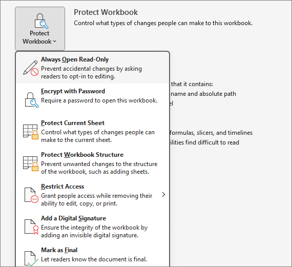
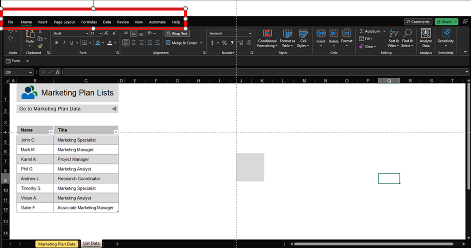
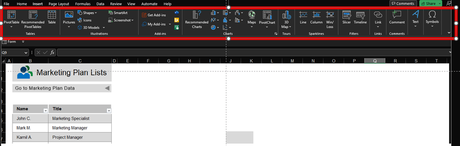
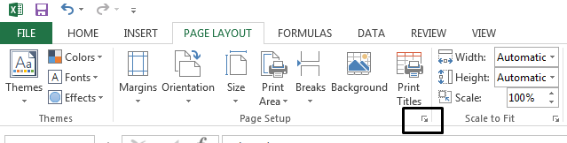
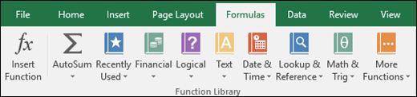
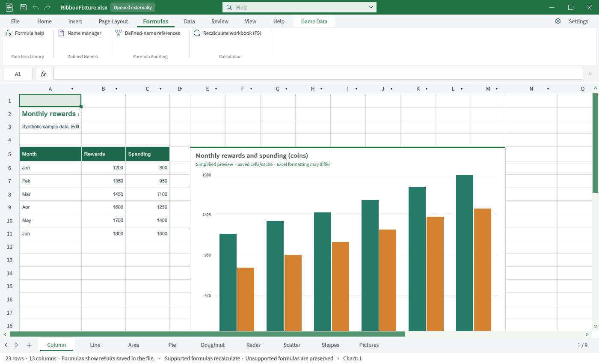
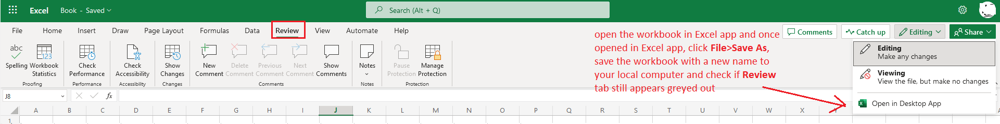

Tracefolio REPORTS & ISSUES
Tracefolio REPORTS & ISSUESExcel ↔ TurnRoom 탭별 TC · 일반 탭 1
부분 완료TC-RIB-01–TC-RIB-07: 원본과 실제 Unity 캡처, 절차·기대·실제·재QA를 구분합니다.
작업 결과
7개 탭의 비교 TC입니다. 전체 Excel 동등성 통과 보고가 아닙니다.
변경 내용
적용 내용
TC-RIB-01 · 파일 — 부분 원본·전체 대조 미실행
| 항목 | 내용 |
|---|---|
| 실행 절차 | 파일 메뉴를 엽니다. |
| 기대 동작 | 열기·저장·닫기와 Excel Backstage 그룹을 비교합니다. |
| 실제 결과 | 원본은 보호 메뉴 일부뿐입니다. 현재는 새 문서·열기·다른 이름 저장·복구·새로 고침 팝업입니다. |
| 재QA·수정 필요 | 전체 Backstage 원본 확보 및 각 대화상자 왕복 실행. |
TC-RIB-02 · 홈 — 불일치
| 항목 | 내용 |
|---|---|
| 실행 절차 | 일반 시트에서 홈 탭을 선택합니다. |
| 기대 동작 | 클립보드·글꼴·맞춤·표시 형식·스타일·셀·편집 그룹을 대조합니다. |
| 실제 결과 | 공통 그룹과 AutoSum·Fill 진입점은 보입니다. 원본의 Sort & Filter·셀 스타일 갤러리 등 전체 구성이 없습니다. |
| 재QA·수정 필요 | 각 명령의 전수 입력·다중 선택·Undo 반복. |
TC-RIB-03 · 삽입 — 불일치
| 항목 | 내용 |
|---|---|
| 실행 절차 | 삽입 탭에서 도형 타일을 클릭합니다. |
| 기대 동작 | 표·도형·그림·차트·링크·텍스트·기호와 추가 삽입 그룹을 대조합니다. |
| 실제 결과 | 도형187종 스크롤 목록 추가. 실제 IMGUI 타일 클릭으로 삽입 대기 확인. 피벗·SmartArt·스파크라인·슬라이서 진입점이 없습니다. |
| 재QA·수정 필요 | 도형 분류별 갤러리 구성·전체 삽입 기능. 760px 창은 가로 스크롤이 생깁니다. |
TC-RIB-04 · 페이지 레이아웃 — 불일치
| 항목 | 내용 |
|---|---|
| 실행 절차 | 페이지 레이아웃을 선택합니다. |
| 기대 동작 | 테마·페이지 설정·배율 그룹을 비교합니다. |
| 실제 결과 | 현재는 페이지 설정 버튼 하나입니다. 원본의 독립 그룹·리본 컨트롤이 없습니다. |
| 재QA·수정 필요 | 페이지 옵션별 실제 저장·재열기 및 인쇄 동작. |
TC-RIB-05 · 수식 — 불일치
| 항목 | 내용 |
|---|---|
| 실행 절차 | 수식 탭을 선택합니다. |
| 기대 동작 | 함수 라이브러리·이름·수식 분석·계산을 비교합니다. |
| 실제 결과 | 도움말·이름 관리자·이름 참조·재계산은 보이지만 함수 분류 갤러리와 분석 도구가 없습니다. |
| 재QA·수정 필요 | 원본 전체 함수 그룹·개별 실행. |
TC-RIB-06 · 데이터 — 불일치
| 항목 | 내용 |
|---|---|
| 실행 절차 | 데이터 탭을 선택합니다. |
| 기대 동작 | 정렬·필터와 데이터 가져오기·쿼리 그룹을 비교합니다. |
| 실제 결과 | 정렬·필터·외부 차트 연결만 보입니다. 원본의 Get Data·쿼리 새로 고침 구성이 없습니다. |
| 재QA·수정 필요 | 데이터 도구 전체·쿼리 엔진. |
TC-RIB-07 · 검토 — 불일치
| 항목 | 내용 |
|---|---|
| 실행 절차 | 검토 탭을 선택합니다. |
| 기대 동작 | 맞춤법·접근성·변경·댓글·보호와 통계를 대조합니다. |
| 실제 결과 | 현재는 통계 버튼만 보입니다. 비교 원본은 Excel 웹이므로 Windows 동일 버전 비교는 아닙니다. |
| 재QA·수정 필요 | Windows 전체 원본 및 검토 도구 구현. |
검증
Unity6000.0.83f1 / Windows / 영어 / 실제 Editor GUIView Direct3D11 캡처입니다. 별도 QA 프로젝트에서 실행했으며 모형·AI 이미지는 사용하지 않았습니다. Excel은 출처의 게시 원본이며 이 PC에서 직접 촬영한 화면이 아닙니다.
TC-RIB-01 · 사진 대조
| Excel 원본 | TurnRoom 현재 |
|---|---|
 |
 |
원본 범위: Excel 보호 메뉴 부분 자료. 원본 출처
TC-RIB-02 · 사진 대조
| Excel 원본 | TurnRoom 현재 |
|---|---|
 |
 |
원본 범위: 부분 원본·정확한 빌드 미확인. 원본 출처
TC-RIB-03 · 사진 대조
| Excel 원본 | TurnRoom 현재 |
|---|---|
 |
 |
원본 범위: 부분 원본·정확한 빌드 미확인. 원본 출처
TC-RIB-04 · 사진 대조
| Excel 원본 | TurnRoom 현재 |
|---|---|
 |
 |
원본 범위: 구형 Windows 원본 일부. 원본 출처
TC-RIB-05 · 사진 대조
| Excel 원본 | TurnRoom 현재 |
|---|---|
 |
 |
원본 범위: 함수 라이브러리 부분 원본. 원본 출처
TC-RIB-06 · 사진 대조
| Excel 원본 | TurnRoom 현재 |
|---|---|
 |
 |
원본 범위: Excel2016 Get & Transform 부분 원본. 원본 출처
TC-RIB-07 · 사진 대조
| Excel 원본 | TurnRoom 현재 |
|---|---|
 |
 |
원본 범위: Excel 웹 원본·Windows와 구별. 원본 출처
남은 사항
명령 전체를 클릭·저장·재열기한 전수 동작 QA는 아닙니다. 화면 표시와 기능 실행 판정을 분리했습니다. 없는 기능은 미구현으로 기록했고 차단으로 바꾸지 않았습니다.
로컬 Excel 실행경로를 확보하지 못해 동일 빌드의 원본 직접 촬영은 미실행입니다. 일부 참조는 구형 Windows 또는 Excel 웹의 부분 화면입니다. 제품 저장소 커밋·푸시는 미실행입니다.
교훈: 원본의 실제 제품·탭을 확인하고 부분 자료를 전체 대조로 계산하지 않습니다. 기존 전역 지침 범위이므로 전역 변경 없음.
작업 시간
- 제안 시간: 최초15–25분. 전체 탭 비교 요청 추가 후35–50분 예상.
- 실제로 완료된 시간: 2026-10-31 22:49:21 KST 시작. 최신 캡처23:14:04 KST 완료, 이 문서 작성23:23 KST. 기능 전체 완료 시각이 아닙니다.
- XERJ: 사용 — XERJ ContextualTabs 검색 후 현재 소스·원본 ZIP·Unity 실행과 대조